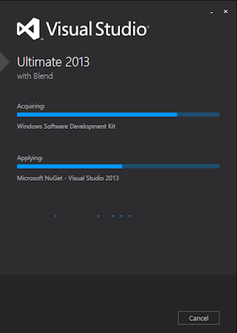
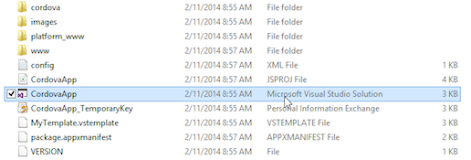
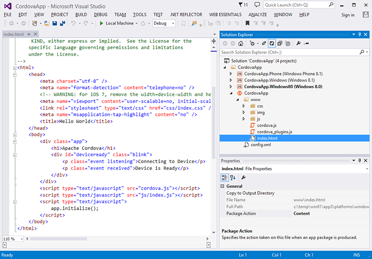
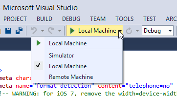
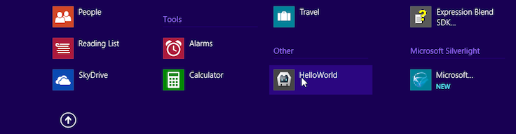
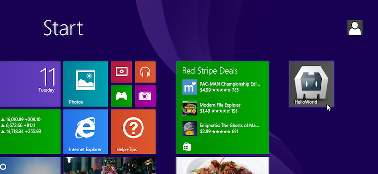
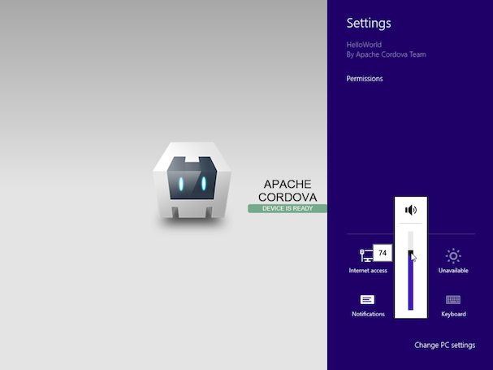
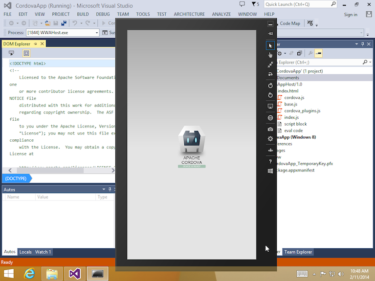

Windows Platform Guide
This guide shows how to set up your SDK development environment to build and deploy Cordova apps for Windows 8, Windows 8.1 and Windows Phone 8.1. It shows how to use either shell tools to generate and build apps, or the cross-platform Cordova CLI discussed in The Command-Line Interface. (See the Overview for a comparison of these development options.) This section also shows how to modify Cordova apps within Visual Studio. Regardless of which approach you take, you need to install the Visual Studio SDK, as described below.
See Upgrading Windows 8 for information on how to upgrade existing Windows 8 Cordova projects.
Window Phone 8 (wp8) stays as a separate platform, see Windows Phone 8 Platform Guide for details.
Cordova WebViews running on Windows rely on Internet Explorer 10 (Windows 8) and Internet Explorer 11 (Windows 8.1 and Windows Phone 8.1) as their rendering engine, so as a practical matter you can use IE's powerful debugger to test any web content that doesn't invoke Cordova APIs. The Windows Phone Developer Blog provides helpful guidance on how to support IE along with comparable WebKit browsers.
Requirements and Support
You need one of the following OS/SDK combinations, either from an installation disk or an ISO disk image file.
To develop apps for Windows 8.0 only:
- Windows 8.0 or 8.1, 32 or 64-bit Home, Pro, or Enterprise editions, along with Visual Studio 2012 Express.
To develop apps for all platforms (Windows 8.0, Windows 8.1 and Windows Phone 8.1):
- Windows 8.1, 32 or 64-bit Home, Pro, or Enterprise editions, along with Visual Studio 2013 Express or higher. An evaluation version of Windows 8.1 Enterprise is available from the Microsoft Developer Network.
Apps compiled under Windows 8.1 do not run under Windows 8.0. Apps compiled under Windows 8.0 are forward-compatible with 8.1.
Follow the instructions at windowsstore.com to submit the app to Windows Store.
To develop Cordova apps for Windows, you may use a PC running Windows, but you may also develop on a Mac, either by running a virtual machine environment or by using Boot Camp to dual-boot a Windows 8.1 partition. Consult these resources to set up the required Windows development environment on a Mac:
Using Cordova Shell Tools
If you want to use Cordova's Windows-centered shell tools in conjunction with the SDK, you have two basic options:
Access them locally from project code generated by the CLI. They are available in the
platforms/windows/cordovadirectory after you add thewindowsplatform as described below.Download them from a separate distribution at cordova.apache.org. The Cordova distribution contains separate archives for each platform. Be sure to expand the appropriate archive,
cordova-windows\windowsin this case, within an empty directory. The relevant batch utilities are available in the top-levelbindirectory. (Consult the README file if necessary for more detailed directions.)
These shell tools allow you to create, build, and run Windows apps. For information on the additional command-line interface that enables plugin features across all platforms, see Using Plugman to Manage Plugins.
Install the SDK
Install the Ultimate, Premium, or Professional 2013 editions of Visual Studio.

Create a New Project
At this point, to create a new project you can choose between the
cross-platform CLI tool described in The Command-Line Interface, or
the set of Windows-specific shell tools. From within a source-code
directory, this CLI approach generates an app named HelloWorld
within a new hello project directory:
> cordova create hello com.example.hello HelloWorld
> cd hello
> cordova platform add windows
> cordova build
Here's the corresponding lower-level shell-tool approach:
C:\path\to\cordova-win\bin\create.bat C:\path\to\new\hello com.example.hello HelloWorld
Build the Project
If you are using the CLI in development, the project directory's
top-level www directory contains the source files. Run either of
these within the project directory to rebuild the app:
> cordova build
> cordova build windows # do not rebuild other platforms
Once you generate the project, the default app's source is available in the
projects\windows\www subdirectory. Subsequent commands are available in
the cordova subdirectory at the same level.
The build command cleans project files and rebuilds the app. The first
example generates debugging information, and the second signs the apps
for release:
C:\path\to\project\cordova\build.bat --debug
C:\path\to\project\cordova\build.bat --release
The clean command helps flush out directories in preparation for the
next build:
C:\path\to\project\cordova\clean.bat
Configure target Windows version
By default build command produces two packages: Windows 8.0 and Windows Phone 8.1.
To upgrade Windows package to version 8.1 the following configuration setting must be
added to configuration file (config.xml).
<preference name='windows-target-version' value='8.1' />
Once you add this setting build command will start producing Windows 8.1
and Windows Phone 8.1 packages.
Deploy the app
To deploy Windows Phone package:
> cordova run windows -- --phone # deploy app to Windows Phone 8.1 emulator
> cordova run windows --device -- --phone # deploy app to connected device
To deploy Windows package:
> cordova run windows -- --win # explicitly specify Windows as deployment target
> cordova run windows # `run` uses Windows package by default
Open the Project in the SDK and Deploy the App
Once you build a Cordova app as described above, you can open it with
Visual Studio. The various build commands generate a Visual Studio
Solution (.sln) file. Open the file in the File Explorer to modify
the project within Visual Studio:

The CordovaApp component displays within the solution, and its www
directory contains the web-based source code, including the
index.html home page:

The controls below Visual Studio's main menu allow you to test or deploy the app:

With Local Machine selected, press the green arrow to install the app on the same machine running Visual Studio. Once you do so, the app appears in Windows 8's app listings:

Each time you rebuild the app, the version available in the interface is refreshed.
Once available in the app listings, holding down the CTRL key while selecting the app allows you to pin it to the main screen:

Note that if you open the app within a virtual machine environment, you may need to click in the corners or along the sides of the windows to switch apps or access additional functionality:

Alternately, choose the Simulator deployment option to view the app as if it were running on a tablet device:

Unlike desktop deployment, this option allows you to simulate the tablet's orientation, location, and vary its network settings.
NOTE: Consult the Overview for advice on how to use Cordova's command-line tools or the SDK in your workflow. The Cordova CLI relies on cross-platform source code that routinely overwrites the platform-specific files used by the SDK. If you want to use the SDK to modify the project, use the lower-level shell tools as an alternative to the CLI.